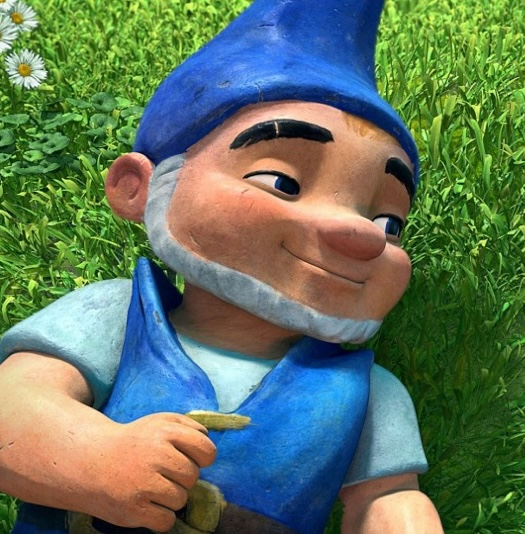
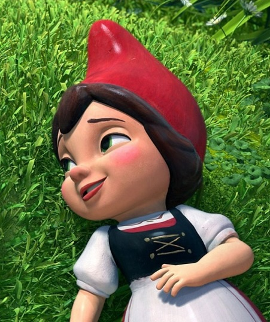

Gnomeo & Juliet is a 2011 British-American 3D computer-animated family comedy film based on William Shakespeare's play Romeo and Juliet, with songs by Elton John. The film is directed by Kelly Asbury, and the two main characters are voiced by James McAvoy and Emily Blunt. The film was released on February 11, 2011. The sequel Sherlock Gnomes was released in 2018 by Paramount Pictures and Metro-Goldwyn-Mayer.
| Gnomeo  | Gnomeo is the main male protagonist of Gnomeo and Juliet. He’s the member of Blue Garden and the eventual lover and later husband of Juliet. | Fueled by his Blue pride, there is nothing Gnomeo can't do. Gnomeo seems to enjoy a good old challenge, and seems content with his friends and the life he lives. Nothing for him is to big or to small. He tries to show his bigger person because of his small one. |
|---|---|---|
| Juliet  | Juliet is the female deuteragonist in Gnomeo & Juliet. She is the member of Red Garden and the eventual lover and wife of Gnomeo. | Emily Blunt voices Juliet Capulet, a red gnome and one of the main protagonists. At first, she tries to outstrip the Blue gnomes by getting a special flower (the Cupid's Arrow Orchid) on top of a greenhouse, but after falling in love with the blue gnome Gnomeo, she, like Gnomeo, is no longer contemptuous towards the Blues. She tends to be stubborn and against being delicate, but can really care about her friends and tend to be a hopeless romantic. Juliet is feisty, willful, and not one to sit on the sidelines. She is delicate and lovely. |